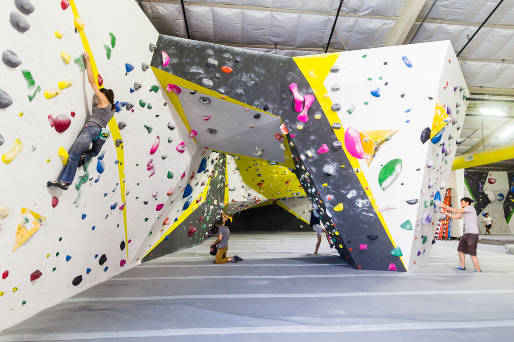
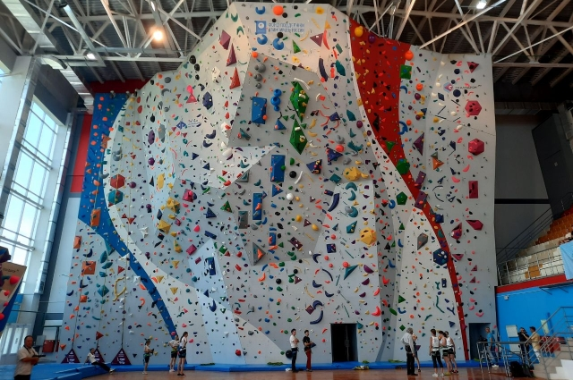
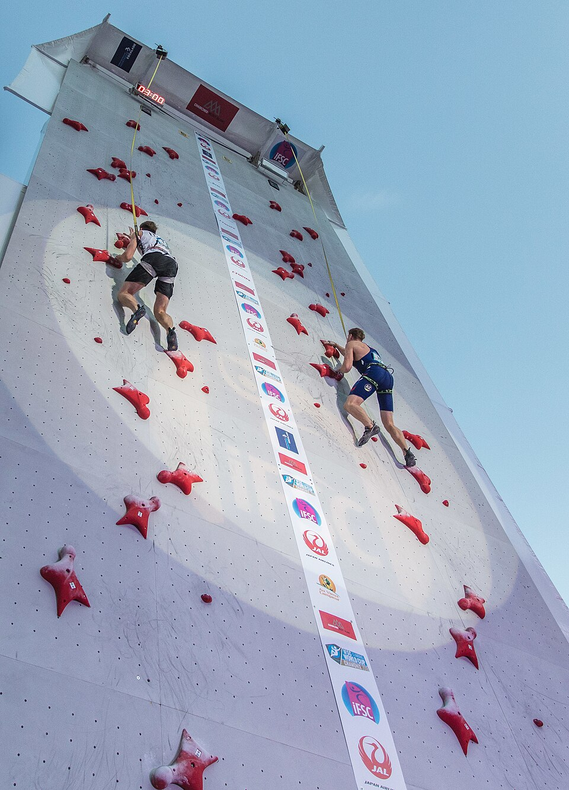

Что такое скалолазание?
Скалолазание — вид спорта и вид активного отдыха, который заключается в лазании по естественному (скалы) или искусственному (скалодрому) рельефу.
Сегодня выделяют несколько дисциплин: боулдеринг, трудность и скорость. С 2020 года скалолазание входит в программу Олимпийских игр.
Сравнение дисциплин
Три основные дисциплины спортивного скалолазания отличаются по формату, высоте и типу страховки.
| Дисциплина | Высота | Страховка | Формат |
|---|---|---|---|
| Боулдеринг | до 4–5 м | мат | серия коротких трасс |
| Трудность | 15–25 м | верёвка снизу | одна длинная трасса |
| Скорость | 15 м | верёвка сверху | на время, две дорожки |



Почему это круто
Скалолазание — отличный вид спорта: во время лазания задействованы все группы мышц, а также развивается умение быстро принимать правильные решения.